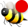

Tu estado cambia contigo
MOSSU mira la red Wi-Fi y tu ubicación para saber en qué sede estás. Con eso pone en Slack el emoji y el texto que tocan, y te avisa con una notificación cada vez que cambia.
- Fuera de las redes de Mercadona te marca «En remoto».
- Si la red falla, lo vuelve a intentar solo.
- «Actualizar estado» en el menú lo fuerza cuando quieras.
-
En remotoTe conectas desde casa
-
En Colmena VLC1Wi-Fi de Mercadona y estás a menos de 500 m
-

En Colmena VLC1Reunión en tu calendario: cambia el emoji -
En tiendaWi-Fi de Mercadona lejos de las sedes